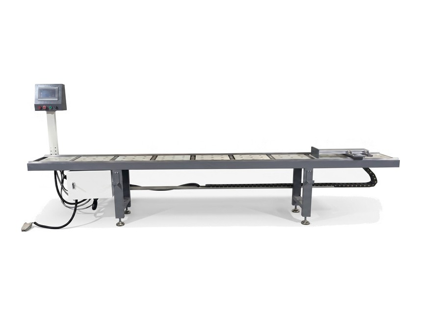
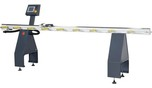
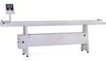
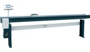
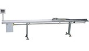
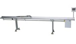
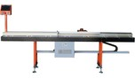
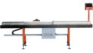
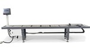
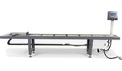
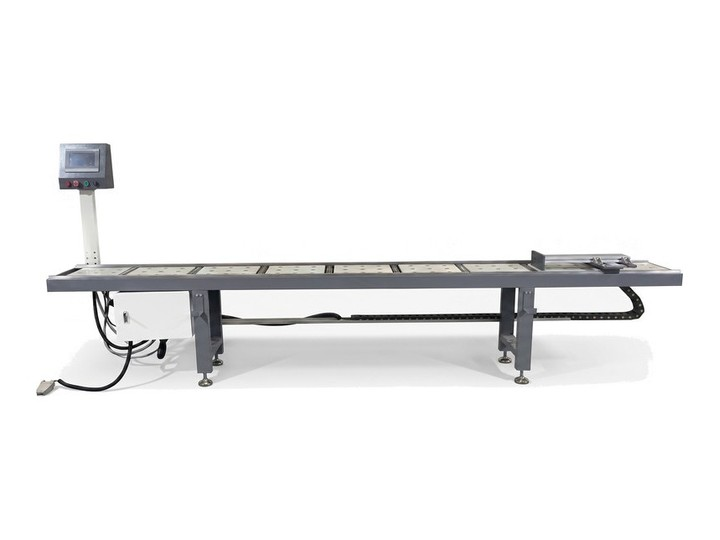
| # | 모델 | 측정 · 이송 범위 / 규격 | 전원 · 크기 · 중량 · 원산지 | |
|---|---|---|---|---|
| 디지털 표시형 (측정 범위 3m · 조기대 수동 이동) | ||||
![]() | 1 | COMET-DD | 측정 범위 최대 3m · 디지털 스케일 유럽방식 | 220V · 3,406 × 650 × 1,375 · 93kg · 터키산 |
![]() | 2 | SC-1000 | 측정 범위 최대 3m | 220V · 3,050 × 400 × 980 · 75kg · 터키산 |
![]() | 3 | CM-35 | 측정 범위 최대 3m | 220V · 3,500×500×1,400 · 90kg · 터키산 |
| CNC 자동이송 0~4,500mm | ||||
![]() | 4 | WTMD-AR-N04 | 절단 범위 0~4,500mm | 220V · 4,650×1,450×700 · 150kg · 국내산 (부품 일부 수입산) |
![]() | 5 | WTMD-AL-N04 | 절단 범위 0~4,500mm · 반복 정밀도 ±0.01mm | 220V (삼상 380V 대응 가능) · 4,650 × 1,450 × 700 · 약 150kg · 국내산 (부품 일부 수입산) |
![]() | 6 | WTMJ-AR-N045 | 절단 범위 0~4,500mm · 주문제작 | 220V · 4,500 × 550 × 700 · 150kg · 중국산 |
![]() | 7 | WTMJ-AL-N045 | 절단 범위 0~4,500mm · 가공정밀도 ±0.5mm | 220V · 4,500 × 550 × 700 · 150kg |
| CNC 자동이송 0~6,000mm | ||||
![]() | 8 | WTMM-AR-N06 | 절단 범위 0~6,000mm · 길이 주문제작 가능 | 220V 50/60Hz · 6,000 × 550 × 800 · 약 150kg · 국내산 (부품 일부 수입산) |
![]() | 9 | WTMM-AL-N06 | 절단 범위 0~6,000mm · 길이 주문제작 가능 | 220V 50/60Hz · 6,000 × 550 × 800 · 약 150kg · 국내산 (부품 일부 수입산) |
| 적용 소재 | 알루미늄 프로파일 · PVC 프레임(절단기 소재와 동일) |
|---|---|
| 연결 설비 | 45°/90° 절단기 · 각도조절 원형절단기 · 2헤드 절단기 등 절단 설비 전반 |
| 길이 표시 | 디지털 표시기 · 터치스크린(기종별 · WTMD 계열 5인치 컬러 화면) |
| 조기대 이동 | 수동(표시형 3종) / CNC 서보 자동이송(6종 · 마그네틱 스케일) |
| 전원 | 220V 단상 · 0.8kW(WTMD 계열은 삼상 380V 대응 가능) |
| 공압 | 불필요(대부분) / COMET-DD 6~8bar · WTMJ-AL-N045 0.5~0.7MPa |
| 장착 방향 | 우측형(AR) · 좌측형(AL) — 절단기 양쪽 동시 구성 가능 |
| 원산지 | 기종별 표기 — 터키산 · 중국산 · 국내산 (부품 일부 수입산) — 위 비교표 참조 |
| 사후 관리 | 표시기·센서·롤러 부품 보유 · 입고 수리 |
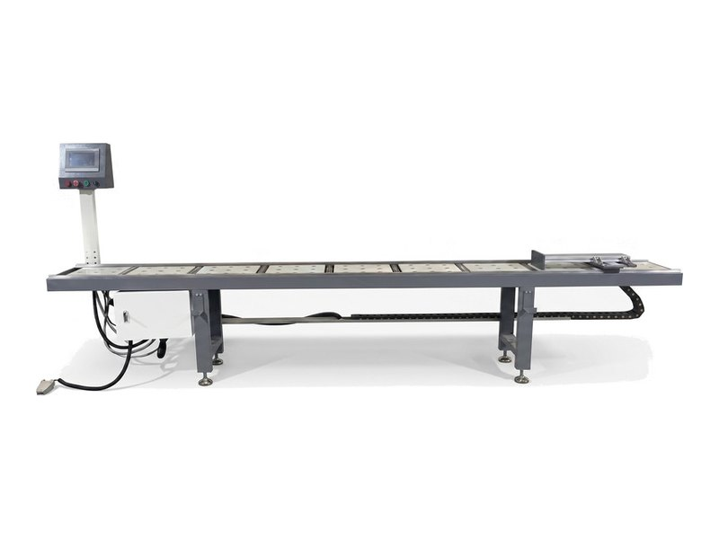
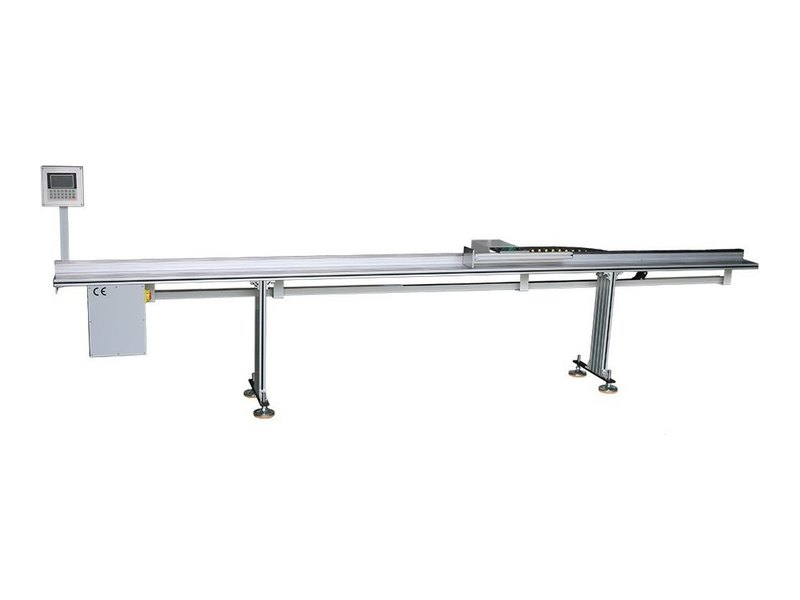
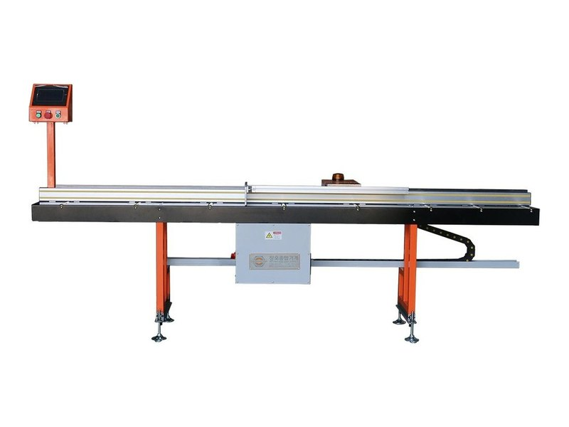
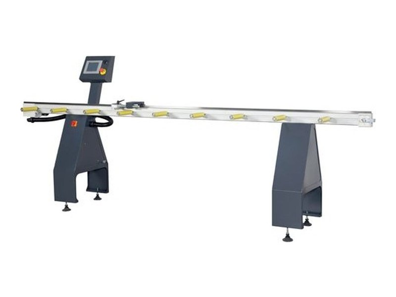
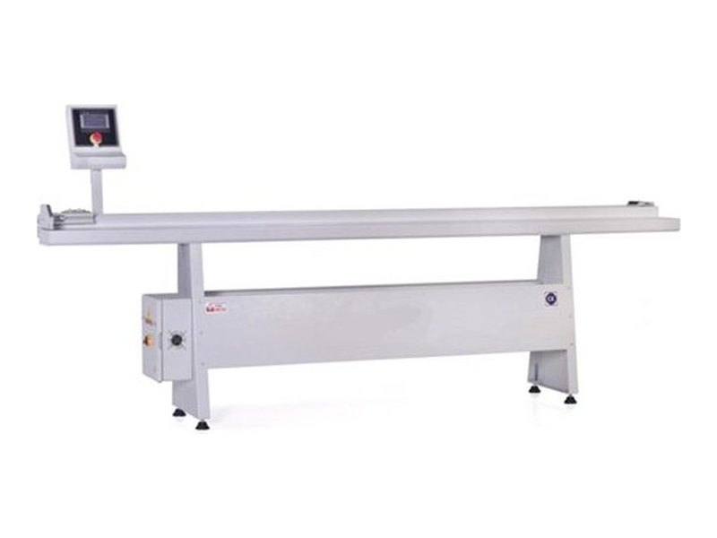
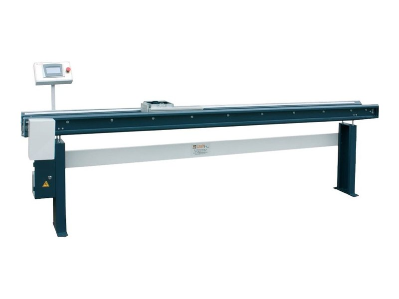
프로파일 최대 길이와 절단기 모델명, 롤러다이를 붙일 쪽을 알려 주시면 맞는 디지털 롤러다이를 선정해 드립니다.